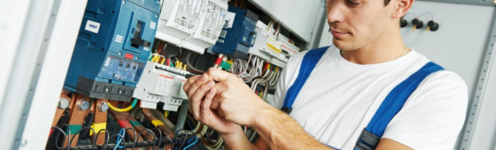

All About Electrician
Electricians in
In this age and time, life is indeed impossible without electricity. It seems difficult to survive even through a power cut of only 15 minutes. Any small breakdown or malfunction can bring our entire routine to a standstill. Life in a place like Mumbai doesn’t really give you time to get such problems fixed.
Searching for a reliable and licensed electrician in Mumbai is a task in itself. At the same time, any electric faults can’t be left unattended. If you find yourself stuck in such a situation, don’t worry. UrbanClap brings you the best electricians at home in Mumbai.
Why book an electrician from kunal enterprise?
Doorstep repair: UrbanClap provides doorstep electric repairs within 90 minutes sparing you the overhead of finding an electrician in the city’s local market.
Reliable Electricians:kunal enterprise licensed electricians are background verified and properly trained before they are brought on board.
Insurance: kunal enterprise provides protection against damage upto INR 10,000.
Post-service guarantee: kunal enterprise provides a 30-day post service guarantee.
Electrical services offered by All About Electrician
Electricians in Mumbai
In this age and time, life is indeed impossible without electricity. It seems difficult to survive even through a power cut of only 15 minutes. Any small breakdown or malfunction can bring our entire routine to a standstill. Life in a place like Mumbai doesn’t really give you time to get such problems fixed.
Searching for a reliable and licensed electrician in Mumbai is a task in itself. At the same time, any electric faults can’t be left unattended. If you find yourself stuck in such a situation, don’t worry. UrbanClap brings you the best electricians at home in Mumbai.
Why book an electrician from kunal enterprise?
Doorstep repair: kunal enterprise provides doorstep electric repairs within 90 minutes sparing you the overhead of finding an electrician in the city’s local market.
Reliable Electricians:kunal enterprise licensed electricians are background verified and properly trained before they are brought on board.
Insurance: UrbanClap provides protection against damage upto INR 10,000.
Post-service guarantee: kunal enterprise provides a 30-day post service guarantee.
Electrical services offered by kunal enterprise
Repairs and fixes: Get your electric faults/electrical devices repaired at your home in Mumbai easily with UrbanClap.
Electricity breakdown: kunal enterprise Electricians in Mumbai can take care of electricity breakdowns.
Electric wiring: Faulty wiring is risky and can’t be left unattended. Get the best electricians in Mumbai to get your home re-wired, at affordable rates.
Installation service: Get any electrical installation done at your home from the best electrical contractors in Mumbai.
Electrician on demand: It includes 30 minutes of electrical services at home in Mumbai.
Full day Electrician booking: It includes 8 hours of electrical services.
Repairs and fixes: Get your electric faults/electrical devices repaired at your home in Mumbai easily with UrbanClap.
Electricity breakdown:kunal enterprise Electrician in Mumbai can take care of electricity breakdowns.
Electric wiring: Faulty wiring is risky and can’t be left unattended. Get the best electricians in Mumbai to get your home re-wired, at affordable rates.
Installation service: Get any electrical installation done at your home from the best electrical contractors in Mumbai.
Electrician on demand: It includes 30 minutes of electrical services at home in Mumbai.
Full day Electrician booking: It includes 8 hours of electrical services.